コンストラクション2025
演習授業コンストラクション2年目による学内成果展。主に寺嶋、中川、野澤で什器制作や告知物を制作。学内にあるものだけで什器を構成している。
[Exhibition]
Instructor : Haruka Aramaki
Assistant : Yukiko Sawada
Rei Sato, Satsuki Sakakura, Kaihaku Kou, Nozomi Terashima, Arata Nakagawa, Yuta Nakamura
Satoka Narikawa, Haruto Nozawa, Nono Yamada, Ryutaro Yamamoto, Daisuke Yokoyama, Satoshi Kitamura
D.P : Nozomi Terashima
Space Design : Arata Nakagawa, Haruto Nozawa
Movie : Haruto Nozawa
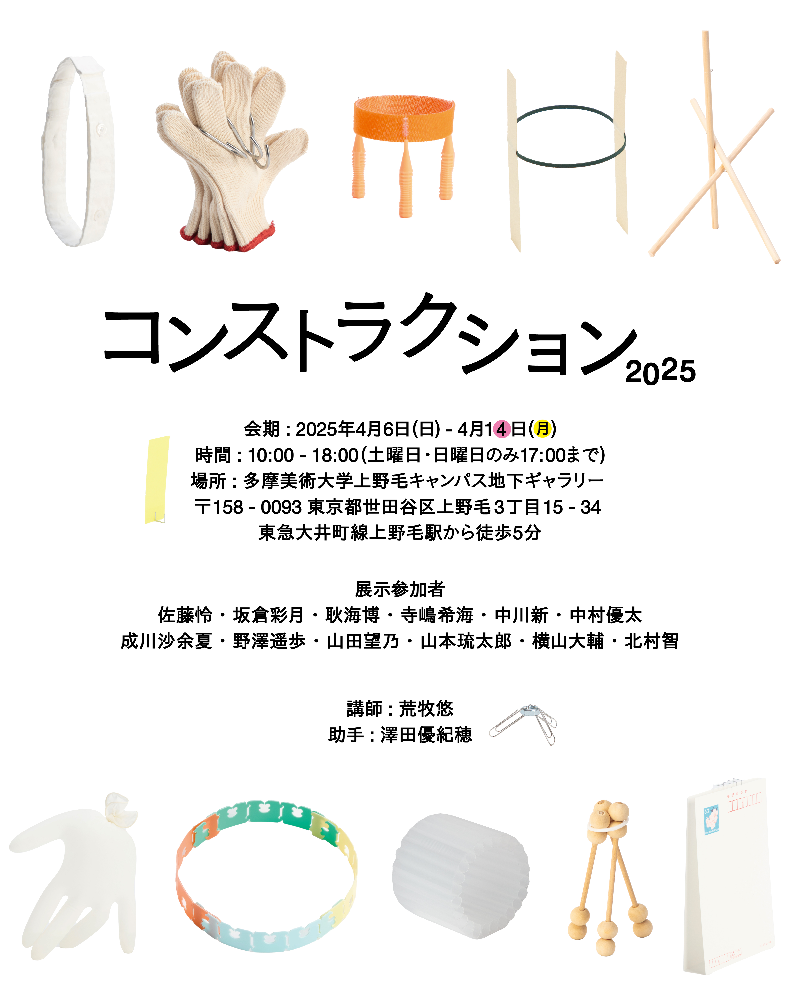
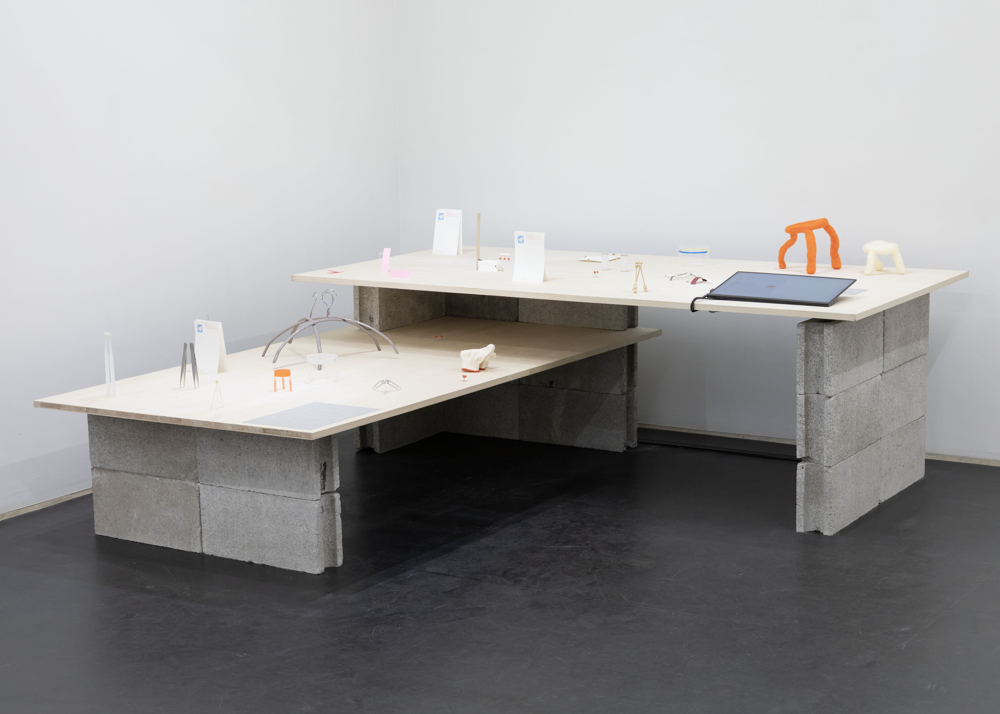
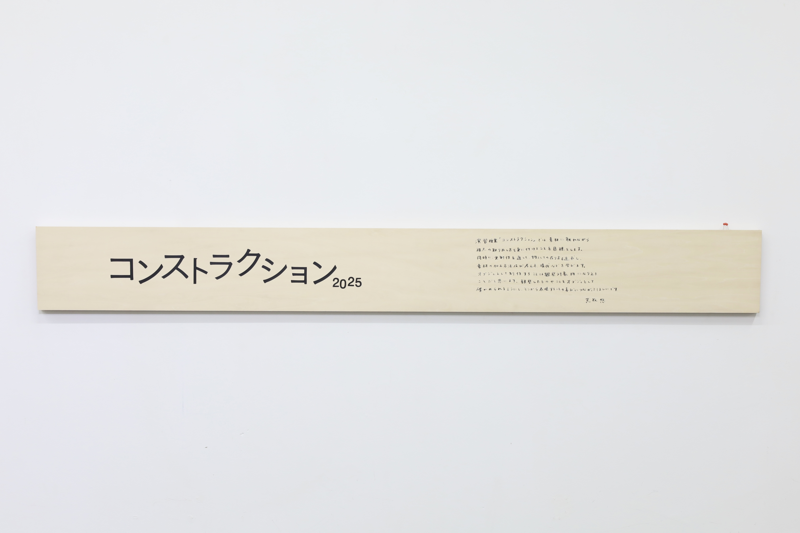
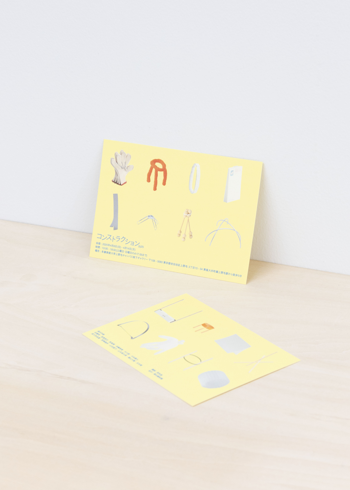
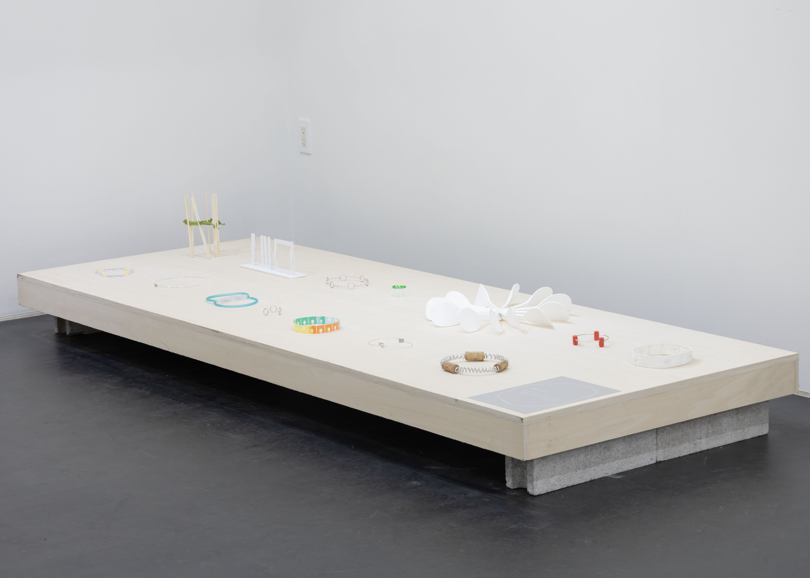
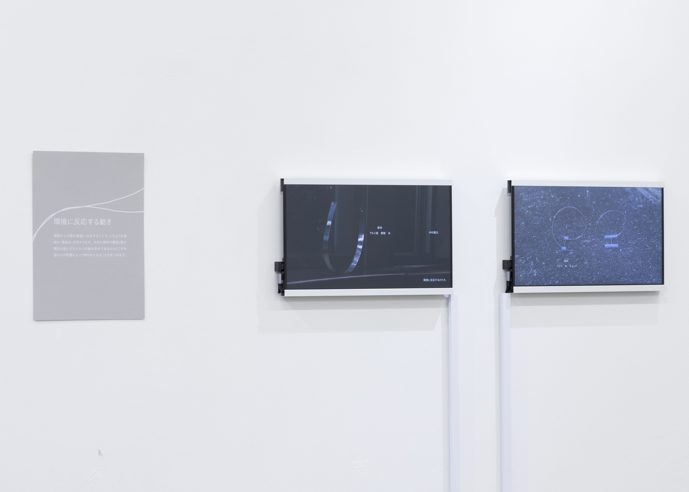
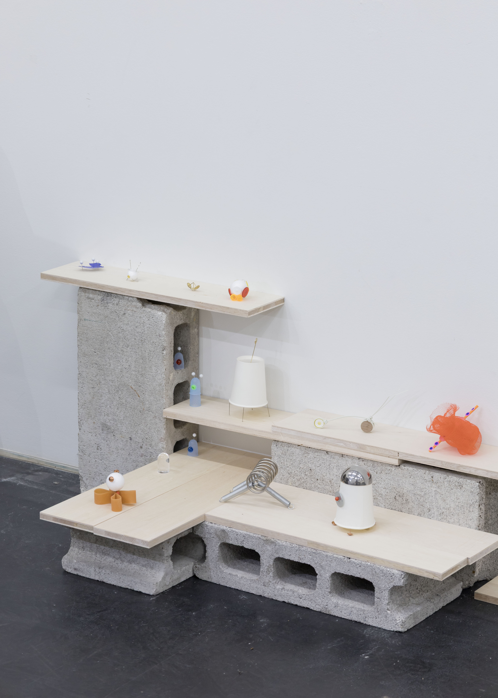
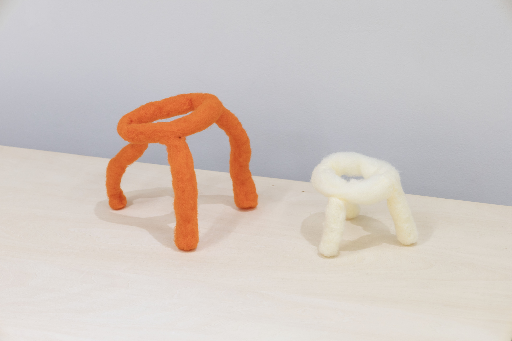
 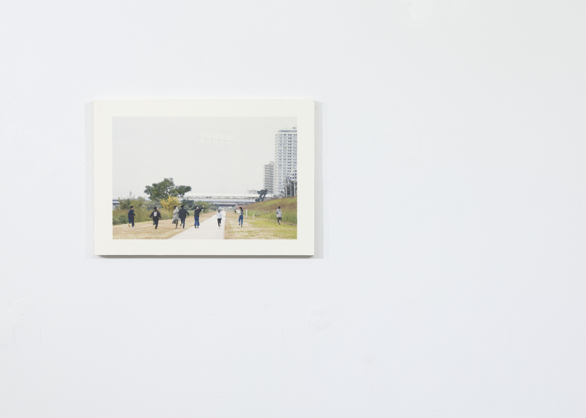
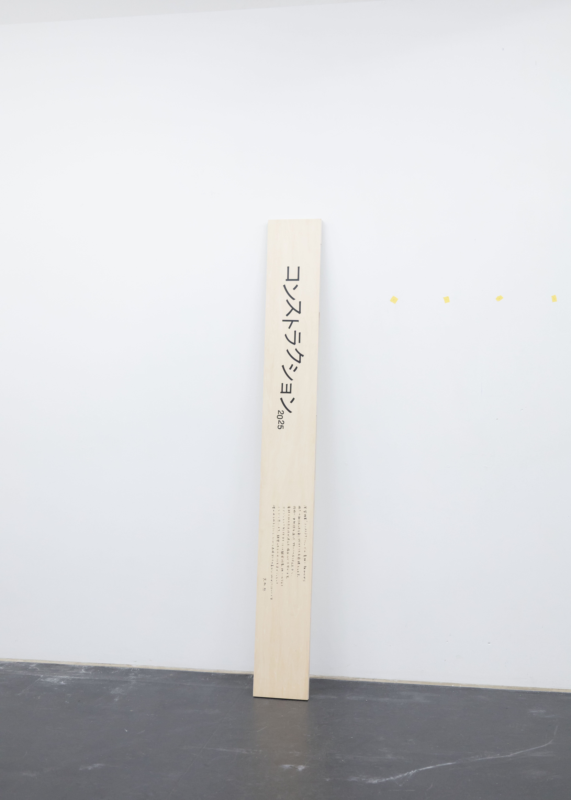
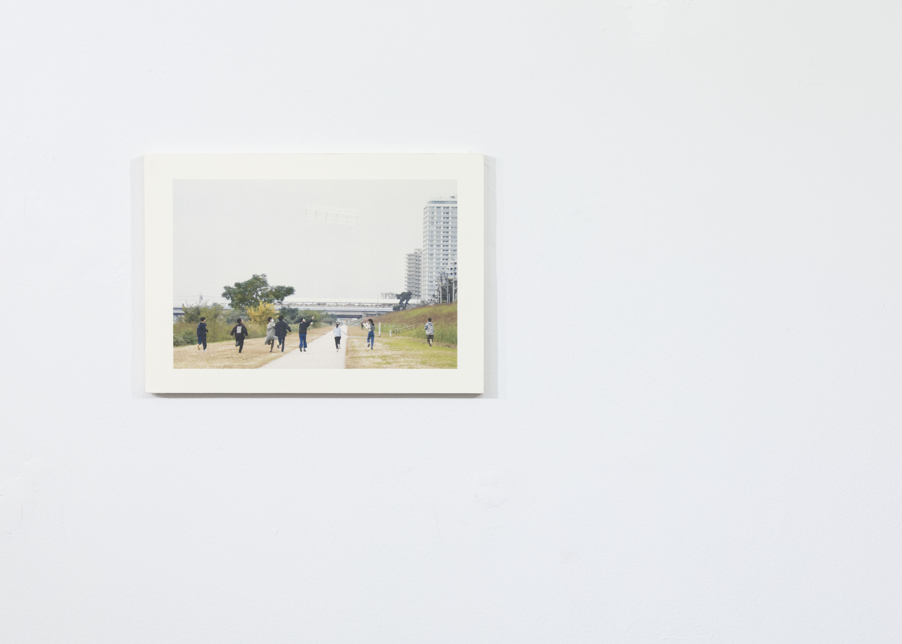
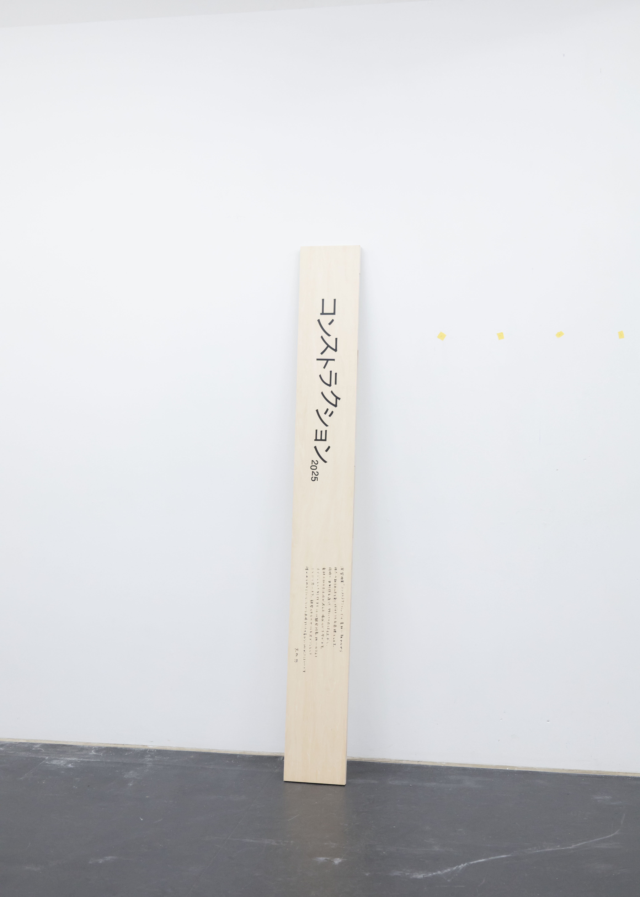
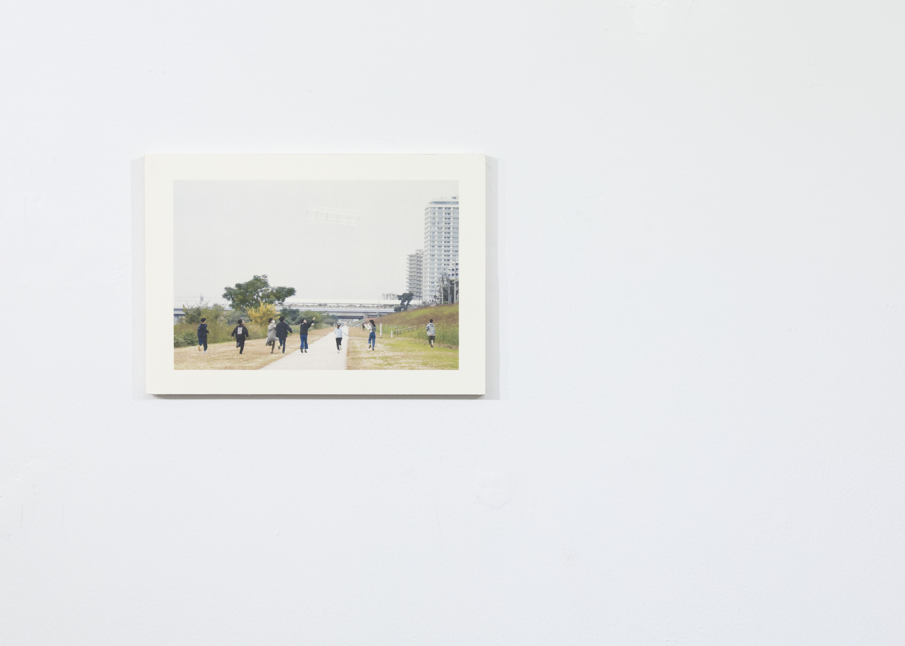
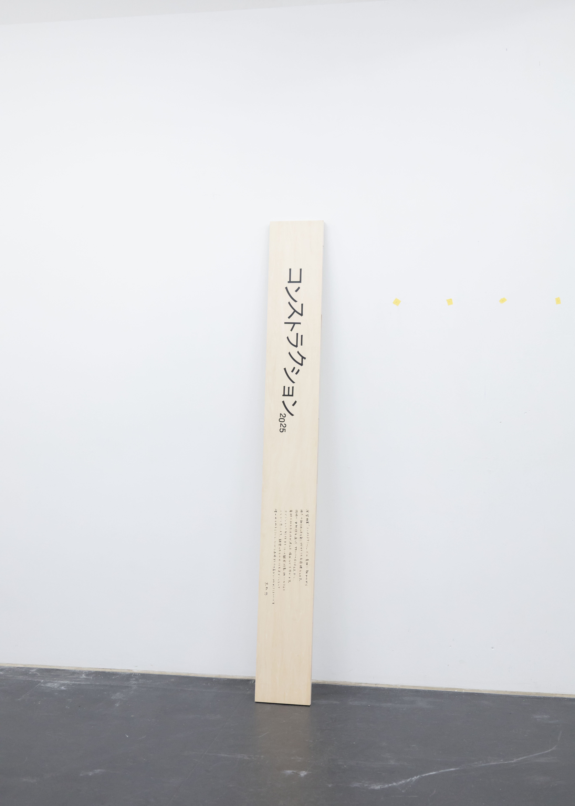